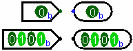

| Library: | Wiring |
| Introduced: | 2.0 Beta 1 (in Base library, moved to Wiring in 2.7.0) |
| Appearance: |  |
A pin is an output or an input to a circuit, depending on the value of its Output? attribute. In drawing a pin, Logisim represents output pins using a circle or rounded rectangle, and input pins are represented using squares or rectangles. In either case, the individual bits of the value being sent or received is displayed within the component (except within printer view, when the component only says how many bits wide the pin is).
A pin is a convenient component for interacting with a circuit, and beginning Logisim users need not use them in any other way. But a user building a circuit using several subcircuits (as described in the `Subcircuits' section of the User's Guide) will use pins also to specify the interface between a circuit and a subcircuit. In particular, a circuit layout's pin components define the pins that appear on the subcircuit component when the layout is used within another circuit. In such a circuit, the values sent and received to those locations on the subcircuit component are tied to the pins within the subcircuit layout.
A pin component has only one pin, which will be an input to the component if the pin is an output pin, and it will be an output to the component if the pin is an input pin. In either case, its bit width matches the Data Bits attribute, and its location is specified by the Facing attribute.
When the component is selected or being added,
Alt-0 through Alt-9 alter its Data Bits
attribute,
the arrow keys alter its Facing
attribute,
and Alt with an arrow key alters its Label Location
attribute.
Clicking an output pin has no effect, although the pin's attributes will be displayed.
Clicking an input pin will toggle the bit that is clicked. If it is a three-state pin, then the corresponding bit will rotate between the three states.
If, however, the user is viewing the state of a subcircuit as described in the `Debugging Subcircuits' of the User's Guide, then the pin's value is pinned to whatever value the subcircuit is receiving from the containing circuit. The user cannot change the value without breaking this link between the subcircuit's state and the containing circuit's state, and Logisim will prompt the user to verify that breaking this link is actually desired.
Allows the label associated with the component to be edited.